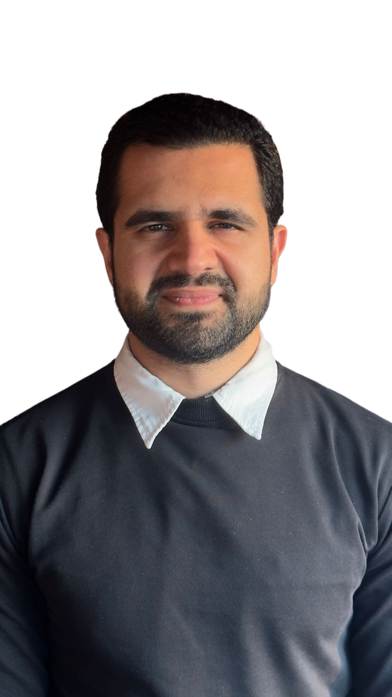
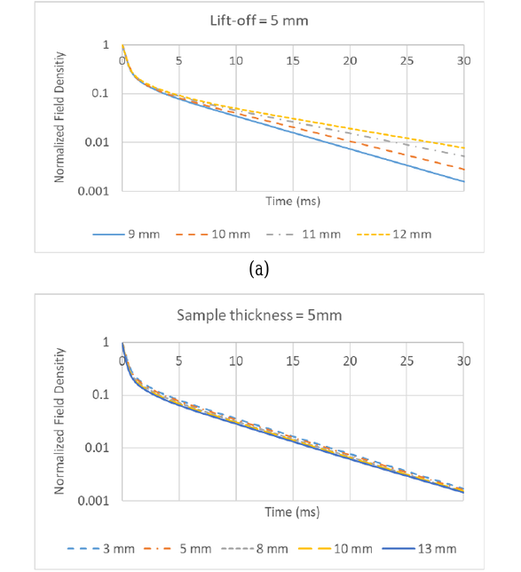

Hi, I'm Ali Al-Kelabi
Master's student in Artificial Intelligence for Smart Sensors and Actuators at Deggendorf Institute of Technology, with a Bachelor's in Mechatronics. My work connects AI and software with sensor data, robotics and automation.
From mechatronics to applied AI
I started in mechatronics, working on sensor measurements, LabVIEW data acquisition and probe development for non-destructive testing, and contributed to a published journal article. Since then I have worked on computer vision, automation teaching materials, web integration and practical AI prototypes. I build understandable, testable systems that connect perception, data processing and useful actions, using incremental validation instead of treating model output as finished.
Availability
Open to internships, working-student opportunities and Master's theses in AI, robotics, computer vision, data engineering and automation. Based in Bavaria and willing to relocate for a suitable opportunity. All coursework is completed; only the Master's thesis remains.
Selected projects
Each project shows its type and status. Prototypes and simulations are labelled as such. Open "Details" for what I implemented, results and limits.
Experience: work, research, teaching
Published research

ResearchMachine-Learning-Based Evaluation of Corrosion Under Insulation in Ferromagnetic Structures
Sophian A., Nafiah F., Gunawan T. S., Yusof N. A. M., Al-Kelabi A. F. IIUM Engineering Journal, 22(2), 226–233, 4 July 2021.
My contribution: experimental PEC measurements, LabVIEW data acquisition, probe development and data preparation.
DOI: 10.31436/iiumej.v22i2.1692 →Technical skills
Grouped by domain, with no claim of equal depth in every tool.
Education, awards & certificates
Leadership, competitions & community
Let's talk
Languages: German B2–C1 · English C2 · Arabic (native). References available on request.